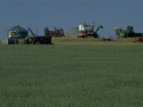

|
|
|
|
|
|
Agriculture History |

|
|
|
Agriculture Today Activity The following activities are designed for you to take a look at how agriculture has changed - from the early years of the 1900's to today. Try some or try all of the tasks. These are ideas that are taken from the Agriculture Saskatchewan series by Saskatchewan Education. |
Activity 1
Divide the class into small groups. Each group is responsible
for developing a topic related to agriculture for presentation
to the class. Some suggested topics follow.
Note that some of these topics are very broad and may be subdivided if necessary. Try to use presentation formats other than print. For example, graphs could be used to show the global effects of Saskatchewan agriculture or posters to describe "agriculture is food production". You could even design a web page advertising your beekeeping or exotic animal operation!
Suggested topics:
- Saskatchewan soil, an important agricultural resource
- environmental issues in an agricultural operation
- global effects of Saskatchewan agriculture
- global effects on Saskatchewan agriculture health and safety issues
- specific agricultural operations such as beekeeping or fish farming and their places in the agricultural industry
- agriculture is food production
- changing technology in agriculture
- women's role in agriculture
Activity 2
Feeding the World: Read the information below, then complete the section that follows.
The total surface area of the planet is about 45 billion hectares,
of which 13 billion hectares is land. About 4.68 billion hectares
of this land area is agricultural land and only 1.4 billion hectares
is suited to intensive cultivation. Most of the agricultural land
is pasture land not suitable for growing crops.
From the 1950s to the year 2000 the world cropland is expected
to increase from 1.4 billion hectares to 1.6 billion hectares.
World population is growing so quickly that, although there has
been an increase in the amount of food produced, there is actually
only half the productive land per person that there was 35 years
ago.
There are over 5.2 billion people on this planet. By 2000 it is estimated there will be 6 billion people in the world. If the population continues to grow at this rate, by 2050 there will be 11 billion people in the world. Annual world food production today is 4 billion tonnes. But, 20% of the world population is hungry every day. Production and distribution of food is not equitable.
There are two types of hunger, or food insecurity: undernutrition
and malnutrition. Undernutrition is not getting enough food such
as in times of famine. Malnutrition is eating poor quality food
that is not balanced in its nutritional content. Both undernutrition
and malnutrition have far reaching effects on the population, especially
on women of childbearing age and children.
According to the World Food Secretariat, chronic undernutrition,
or a continuing lack of food, is the most widespread. This could
be seasonal in nature. There may be an abundance of food at harvest
time but not enough food, or money to purchase it, the rest of
the year. Although undernutrition due to famine receives more
publicity, chronic undernutrition affects many more people in
developing countries such as Bangladesh, India, Nepal, Pakistan,
Sri Lanka, Ethopia, Nigeria, Zaire, Uganda and Mozambique.
Choose a recorder and a reporter within your group.
After each person in your group has read the information, have
a group brainstorming session.
- List as many 'plus' statements as you can that result from the above information. All statements are valid.
- List as many 'minus' statements as you can that result from the above information. All statements are valid.
- List as many interesting questions as you can that result from the above information.
- Discuss where you can find answers to your questions.
Activity 3
Work in small groups of three or four to
brainstorm changes to the agrifood industry that have been made
because of consumer demand. Have one member of each group report
back to the large group and record the suggestions. Possible suggestions
follow.
Pork producers may raise some pigs for the pork chop market, others
for the bacon market and others for the ham market. Beef is now
20% leaner than it was 15 years ago. New varieties of saskatoon
berries have been developed that are larger and can be grown domestically.
. There is an increase in organic farming and the wild rice and
aquaculture industries. There is an increase in crop diversification.
Producers are growing field peas, potatoes, native berries, mushrooms
and honey. Smaller meat carcasses and cuts of meat are required
because of changes in family size and attitudes about diet.
Think about what meals were like, what they
are like today and what a meal may be like in the future.
- Why have changes occurred?
- What forces ensure that changes will continue to occur?
- Are these changes positive or negative?
- Which people and organizations would agree with your opinion and which would disagree?
- What will the effects be on the agriculture industry?
Activity 4
Investigate the lesser known areas of the
agricultural industry such as apiculture, game ranching, organic
farming, aquaculture, berry harvesting and wild rice production.
Information about these industries can be obtained from Saskatchewan
Agriculture and Food, 3085 Albert Street, Regina, Saskatchewan,
S4S OB1 or from the association representing that industry.
Activity 5
Record everything you eat in a day. Complete several concept webs using the foods eaten as
the end concept. This will require reading of labels, classifying
into food groups, researching the origin of the food and discovering
about food additives and food enrichment during processing.
|
|
|